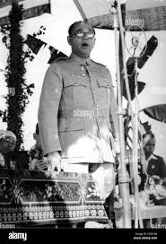
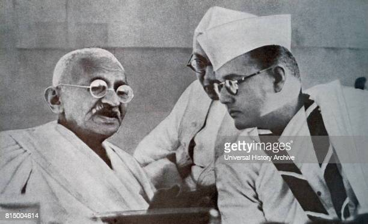

Subhas Chandra Bose, byname Netaji (Hindi: “Respected Leader”), (born c. January 23, 1897, Cuttack, Orissa [now Odisha], India—died August 18, 1945, Taipei, Taiwan?), Indian revolutionary prominent in the independence movement against British rule of India. He also led an Indian national force from abroad against the Western powers during World War II. He was a contemporary of Mohandas K. Gandhi, at times an ally and at other times an adversary. Bose was known in particular for his militant approach to independence and for his push for socialist policies. Subhas Chandra Bose, byname Netaji (Hindi: “Respected Leader”), (born c. January 23, 1897, Cuttack, Orissa [now Odisha], India—died August 18, 1945, Taipei, Taiwan?), Indian revolutionary prominent in the independence movement against British rule of India. He also led an Indian national force from abroad against the Western powers during World War II. He was a contemporary of Mohandas K. Gandhi, at times an ally and at other times an adversary. Bose was known in particular for his militant approach to independence and for his push for socialist policies.
Early life and political activity
The son of a wealthy and prominent Bengali lawyer, Bose studied at Presidency College, Calcutta (Kolkata), from which he was expelled in 1916 for nationalist activities, and the Scottish Churches College (graduating in 1919). He then was sent by his parents to the University of Cambridge in England to prepare for the Indian Civil Service. In 1920 he passed the civil service examination, but in April 1921, after hearing of the nationalist turmoils in India, he resigned his candidacy and hurried back to India. Throughout his career, especially in its early stages, he was supported financially and emotionally by an elder brother, Sarat Chandra Bose (1889–1950), a wealthy Calcutta lawyer and Indian National Congress (also known as the Congress Party) politician. Bose joined the noncooperation movement started by Mohandas K. Gandhi, who had made the Indian National Congress a powerful nonviolent organization. Bose was advised by Gandhi to work under Chitta Ranjan Das, a politician in Bengal. There Bose became a youth educator, journalist, and commandant of the Bengal Congress volunteers. His activities led to his imprisonment in December 1921. In 1924 he was appointed chief executive officer of the Calcutta Municipal Corporation, with Das as mayor. Bose was soon after deported to Burma (Myanmar) because he was suspected of connections with secret revolutionary movements. Released in 1927, he returned to find Bengal Congress affairs in disarray after the death of Das, and Bose was elected president of the Bengal Congress. Shortly thereafter he and Jawaharlal Nehru became the two general secretaries of the Indian National Congress. Together they represented the more militant, left-wing faction of the party against the more compromising, right-wing Gandhian faction.
A falling-out with Gandhi
Vocal support for Gandhi increased within the Indian National Congress, meanwhile, and, in light of this, Gandhi resumed a more commanding role in the party. When the civil disobedience movement was started in 1930, Bose was already in detention for his associations with an underground revolutionary group, the Bengal Volunteers. Nevertheless, he was elected mayor of Calcutta while in prison. Released and then rearrested several times for his suspected role in violent acts, Bose was finally allowed to proceed to Europe after he contracted tuberculosis and was released for ill health. In enforced exile and still ill, he wrote The Indian Struggle, 1920–1934 and pleaded India’s cause with European leaders. He returned from Europe in 1936, was again taken into custody, and was released after a year. Meanwhile, Bose became increasingly critical of Gandhi’s more conservative economics as well as his less confrontational approach toward independence. In 1938 he was elected president of the Indian National Congress and formed a national planning committee, which formulated a policy of broad industrialization. However, this did not harmonize with Gandhian economic thought, which clung to the notion of cottage industries and benefiting from the use of the country’s own resources. Bose’s vindication came in 1939, when he defeated a Gandhian rival for reelection. Nonetheless, the “rebel president” felt bound to resign because of the lack of Gandhi’s support. He founded the Forward Bloc, hoping to rally radical elements, but was again incarcerated in July 1940. His refusal to remain in prison at this critical period of India’s history was expressed in a determination to fast to death, which frightened the British government into releasing him. On January 26, 1941, though closely watched, he escaped from his Calcutta residence in disguise and, traveling via Kabul and Moscow, eventually reached Germany in April.
Quotes
- "No real change in history has ever been achieved by discussions."
- "Freedom is not given - it is taken."
- "The secret of political bargaining is to look more strong than what you really are."
- "Give me blood and I will give you freedom!"
- "It is only on the basis of undiluted Nationalism and of perfect justice and impartiality that the Indian Army of Liberation can be built up"
know more about netaji

!! Please Click the above picture !!